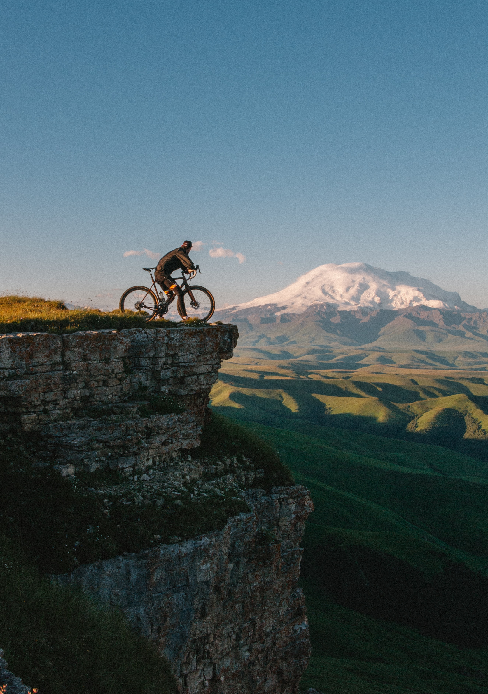
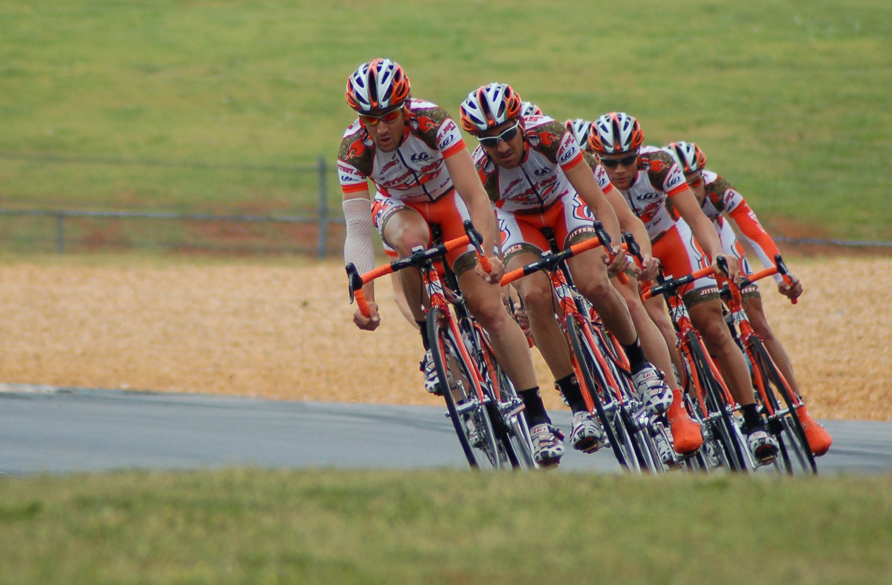
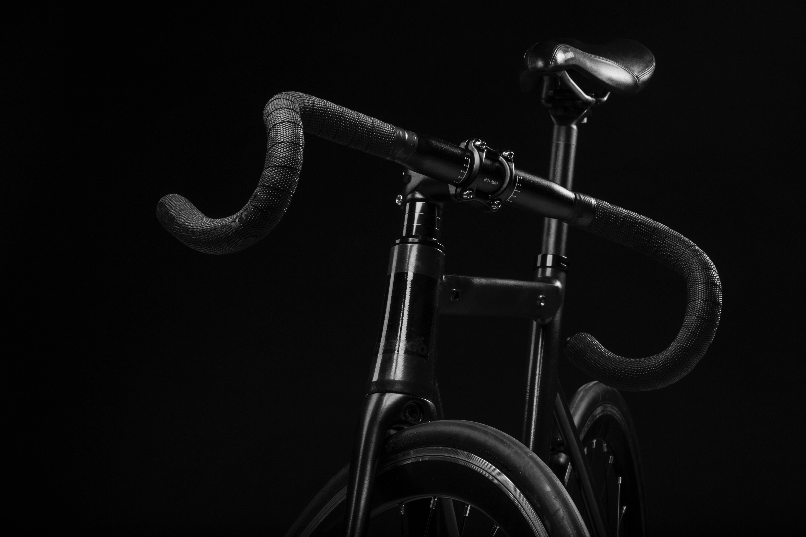
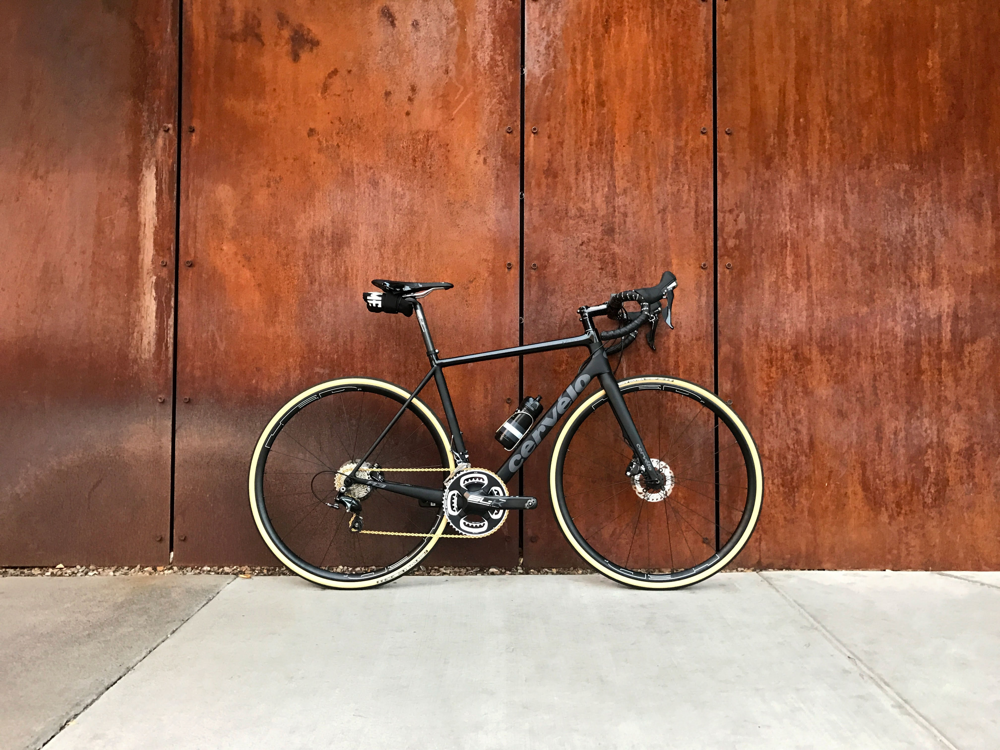
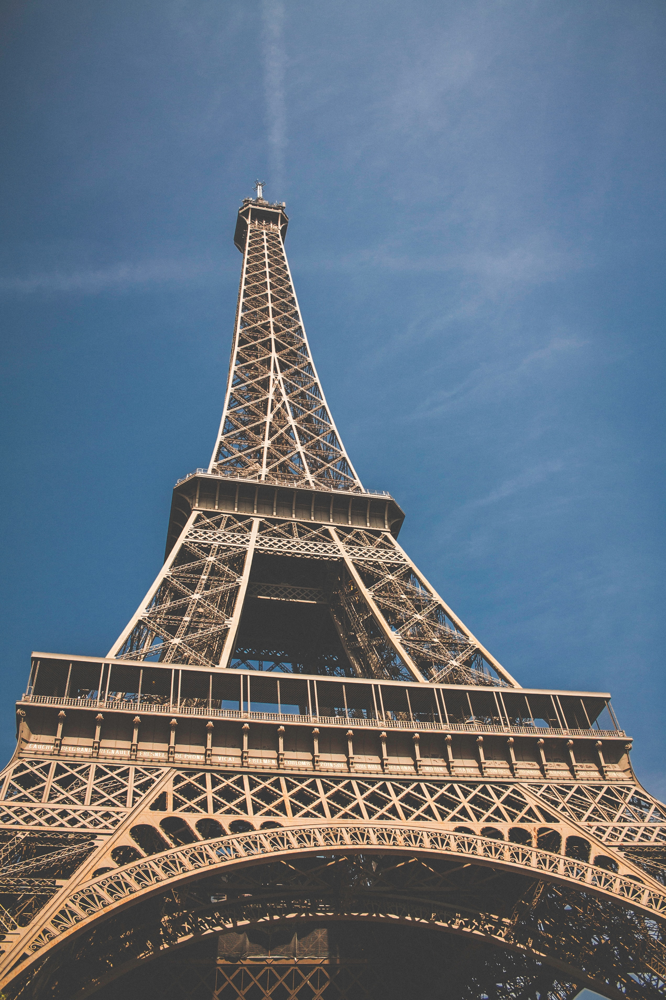

About
- Cycling, also called biking or bicycling, is the use of bicycles for transport, recreation, exercise or sport.
- People engaged in cycling are referred to as "cyclists", "bikers", or less commonly, as "bicyclists".
- Cycling is widely regarded as a very effective and efficient mode of transportation optimal for short to moderate distances.
- Among the disadvantages of cycling are the requirement of bicycles (excepting tricycles or quadracycles) to be balanced by the rider in order to remain upright, the reduced protection in crashes in comparison to motor vehicles
- Cycling quickly became an activity after bicycles were introduced in the 19th century. Today, over 50 percent of the human population knows how to ride a bike
- Many schools and police departments run educational programs to instruct children in bicycle handling skills
- Beyond simply riding, another skill is riding efficiently and safely in traffic.
- Cyclists, pedestrians and motorists make different demands on road design which may lead to conflicts.
Tour'de France

Bicycle touring
Organized rides

Mountain

Racing

Activism
Health effects

Exercise
The physical exercise gained from cycling is generally linked with increased health and well-being. According to the World Health Organization, physical inactivity is second only to tobacco smoking as a health risk in developed countries

Bicycle safety
Cycling suffers from a perception that it is unsafe.This perception is not always backed by hard numbers, because of under reporting of accidents and lack of bicycle use data (amount of cycling, kilometers cycled) which make it hard to assess the risk and monitor changes in risks.